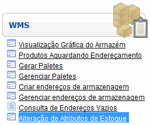

Alteração de Atributos de Estoque [ Voltar ]Utilize este formulário para editar algumas características de produtos atualmente em estoque. Para acessar o formulário, vá ao menu "WMS" na página inicial e clique em "Alteração de atributos do estoque " . 
O sistema vai abrir a seguinte tela: Para alterar os atributos de produtos existentes, siga os passos abaixo: 1º Passo: preencha os campos necessários:
2° Passo: clique no botão 3º Passo: especifique os produtos cujos atributos devem ser alterados. Se necessário, clique no campo, o qual exibirá o botão Após clicar no botão Para inserir mais produtos, simplesmente clique no botão Depois que o código é inserido, uma tabela contendo os diversos lotes existentes do produto é mostrada, na parte inferior da tela: 4º Passo: selecione o lote adequado. É possível que existam no sistema vários lotes diferentes do produto selecionado. Clique com o cursor do mouse sobre o lote desejado, para que todos os dados sejam inseridos na tabela. Observe como o sistema insere os dados da linha selecionada nos campos adequados da tabela. 5º Passo: faça as alterações desejadas. Os atributos que podem ser alterados são o lote, a data de vencimento, a marca e o programa. 6º Passo: clique no botão Para retornar à tela principal, clique no botão  . .
|
 [Novo] e repita o procedimento descrito no passo acima.
[Novo] e repita o procedimento descrito no passo acima. [Salvar] para processar as alterações feitas nos produtos. Se desejar alterar os atributos de outros produtos, clique no botão
[Salvar] para processar as alterações feitas nos produtos. Se desejar alterar os atributos de outros produtos, clique no botão